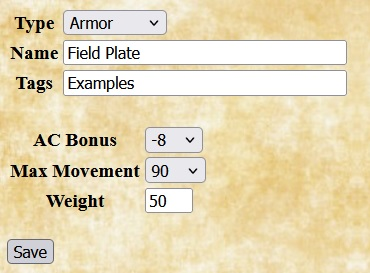
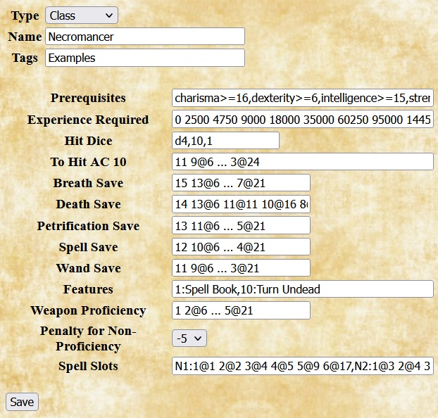

Adding Homebrew Choices to Quilvyn's OSRIC Rule Set
The OSRIC rule set allows you to add homebrew choices to most of its
selections: armor, weapons, races, and so on. The entry dialog for each
type of choice includes fields for all the information particular to that
type. For most choices, the values to enter into the dialog can be determined
by comparing them to similar choices from the core rules.
The input fields used to enter homebrew choices are similar to those used
by the Quilvyn editor—text fields, selection menus, checkboxes, etc.
One difference between the two is that you can enter multiple values into most
text boxes in the homebrew choices editor. For example, when entering a
homebrew race, you will likely want to enter multiple values in the Languages
text box. To do this, separate the individual values by commas:
Common,Goblin,Hobgoblin. If you ever need to enter a single value that contains
a comma into a text box, enclose the value in quotes: "May create and mend
magic weapons, armor, and shields".
Although the widest text boxes that Quilvyn uses show around 40 characters, you
can enter longer text values. Only 40 characters will show at once, but you can
use your arrow keys to move the cursor within the full text. Several examples
below show only the beginning portion of longer values entered into text boxes.
|
Armors

|
For homebrew armors, Quilvyn displays fields for entering the improvement to
armor class gained by using the armor and the maximum movement allowed when
wearing it.
The example shown gives the values for field plate, as discussed in the
equipment section of the OSRIC rules. It adds -8 to the wearer's armor class
and limits movement to 90'.
|
|
Classes

|
When adding a homebrew class, Quilvyn displays fields that allow you to specify
optional class prerequisites, the experience points required to advance to each
level, class hit dice, THAC10 and save progressions, class features, weapon
proficiency progression, the penalty for using a non-proficient weapon, and
any spell slots gained by the class.
The Hit Dice entry is a list of three items that indicate the number of sides
on the dice, the maximum number of dice, and the number of points added to a
character's hit points each level after the maximum number of dice is reached.
For example, the Hit Dice entry for the cleric class is d8, 9,
2—indicating that a cleric character gains d8 hit points each level
through level 9, after which a fixed 2 hit points are added each level.
Several of the entries—experience required, THAC10, saves, weapon
proficiency, and spell slots—represent columns from tables in the OSRIC
rules. Each of these entries contains a set of items listing a class level and
the value of the attribute for the class at that level. For example, the Weapon
Proficiency entry for the Assassin class might read "3@1 4@5 5@9 6@13",
indicating that the class grants proficiency in 3 weapons at level 1, 4 weapons
at level 5, 5 weapons at level 9, and 6 weapons at level 13. (The first item in
all progressions is assumed to apply to level 1 in the class, so including the
"@1" is optional.) If the progression is regular, like the +1 increment to the
proficient weapon count every 4 levels in this example, intermediate values can
be replaced by "...", so the Assassin class Weapon Proficiency can equivalently
be shown as "3 4@5 ... 6@13". As another example, consider the THAC10 value for
the cleric class—10 at level 1, then reducing by 2 every three levels
through level 18, then dropping to -1 for all higher levels. Spelled out, this
progression would be "10 8@4 6@7 4@10 2@13 0@16 -1@19". However, since the
progression is regular through level 18, this sequence to be shortened to "10
8@4 ... -1@19".
The example shows entries for a Necromancer class that has similar features to
the core Illusionist class. Instead of the high dexiterity score required by
the Illusionist class, this Necromancer class requires a high charisma score,
and it gains the ability to turn undead as a cleric at level 10.
|
|
Features

|
In Quilvyn, features describe the effects of class and racial features.
When adding a homebrew feature, enter the section of the character sheet (one
of ability, combat, feature, magic, or save) where the note for the feature
should appear, then enter the note text. You can enter multiple sections and
notes, but the number of sections entered must equal the number of notes.
Feature notes can both reference and modify character attributes; see the
discussion of using character attributes for how to do
this.
The example shows the entries for two features of the Lizard Man race
outlined below.
|
|
Languages
|
Adding a homebrew language requires only specifying the name. Once added,
languages can be added to a character by selecting from the language list and
can be included in the list of languages automatically known by homebrew races.
The examples shows the entries for a language called Scaletongue.
|
|
Races
|
When adding a homebrew race, Quilvyn displays fields that allow you to enter
prerequisites, features, and languages for the race. Each racial feature listed
will require adding a feature to describe its effects.
The Languages field lists the languages that characters of this race know
automatically.
The example shows an entry that allows players to choose the Lizard Man race
from the Monsters section of the core rules for their characters. Features for
this race are Natural Swimmer, Tough Hide, Slow, and Lizard Man Ability
Adjustment. The corresponding feature entries for the first two of these are
shown above.
|
|
Spells
|
When adding a homebrew spell, Quilvyn displays fields that allow you to enter
the spell's type, the list of classes and levels for the spell, and the
description of the spell. Spell descriptions can embed references to character
attributes; see the discussion of using character attributes
for how to include these.
The example shows the entry for the alteration spell Enhance Ability,
which is a level 3 spell for clerics and magic users. The description notes
that the spell can be cast over a short range and lasts for a number of rounds
equal to the caster level.
|
|
Weapons
|
When adding a homebrew weapon, Quilvyn displays fields that allow you to enter
the weapon's category (Unarmed, Light, One-Handed, Two-Handed, or Ranged),
damage, and (for ranged weapons) range increment.
The example shows the entry for a boomerang, a weapon with a 40' range that
inflicts d4 damage.
|
|
Using Character Attributes in Prerequisites and Notes
There are three places that you might want to use references to character
attributes when adding homebrew choices: prerequisites for homebrew classes
and races; in feature notes that modify character attributes; and embedded in
feature notes and spell descriptions. Attribute references appear somewhat
differently in each of these contexts.
The examples below develop a homebrew feature named Alert Dodger, which gives
the character a bonus to their armor class based on high wisdom.
Bonus feature, this feat allows a character to add their (positive) wisdom
modifier to their armor class. This will be a general feat that can be taken
as a fighter bonus feat, so the initial entry for the feat looks like this:

Using attributes in prerequisites
In the core rulebook, many feats and all prestige classes have
prerequisites—attribute values that the character must have to take the
feat or a level in the prestige class. Quilvyn allows you to specify similar
prerequisites when entering a homebrew class, feat, or race.
Since the effects of the Alert Dodger feat come from battle experience, it
makes sense to require a minimum base attack bonus—say, 3—to take
the feat. This is represented by adding text to the feat's Prerequisite field:

Quilvyn will generate tests for this requirement and will show a validation
error if a character with a base attack bonus of 2 or less is given this feat.
You can also specify that the character must have a specific feature as part of
your prerequisites. For the Alert Dodger feat, it seems reasonable to require
that the character also have the Dodge feature:

Finally, although a high wisdom might not be required to take this feat, it
will make little sense to do so unless the character's wisdom is at least 12,
giving a positive wisdom modifier. This can be specified by adding text to
the Implies field:

Within prerequisites, Quilvyn recognizes the common comparison operators
(<, <=, >, >=, ==, !=), and you can use the OR operator (||) to
require that at least one of a set of prerequisites is satisfied:
intelligence >= 15 || wisdom >= 15
When making a comparison to a text value rather than a number, surround the
value with single or double quotes. Quilvyn also supports the matching
operators =~ (matches) and !~ (does not match) with strings. The first of these
two prerequisites requires that the character have a Lawful Good alignment,
while the second allows any good alignment:
alignment == 'Lawful Good'
alignment =~ 'Good'
(You can think of the =~ and !~ operators as "contains" and "does not contain",
but they actually perform a pattern match, treating their second operand as a
regular expression. This means that certain characters, such as * and ?, have
special meanings if they appear in the second operand. The Mozilla project
provides a web page with
a detailed description of regular expressions.)
Using features to modify character attributes
With the Alert Dodger feat definition complete, the next step is to create the
corresponding feature, also named Alert Dodger. This will add the description
of the feat to the character sheet and allow Quilvyn to create rules to
implement its effects. Since the feat affects a character's armor class, its
note will fit best in the combat section of the character sheet.
To illustrate how Quilvyn processes feature notes, we'll initially define the
Alert Dodger feat to add a fixed +2 to the character's armor class, switching
later to adding the wisdom modifier instead.

Given this definition, Quilvyn will automatically generate a rule that adds two
to the character's armor class value, and the note will appear in italics on
the character sheet. For readability, character attributes in feature notes
must appear as shown above, with initial capital letters and spaces between
words.
Single features can modify multiple attributes; in these cases, the note should
list the individual modifications separated by slashes. This was shown above in
the race definition example, where the note for the
Lizardfolk Ability Adjustment read:
+2 Strength/+2 Constitution/-2 Intelligence
Notes in the save and skill sections can modify save bonuses and skill
modifiers by referencing the save type or skill name directly; the saves. and
skillModifiers. prefixes are not necessary:
+1 Fortitude
+2 Ride/+2 Handle Animal
Embedding attributes in features notes and spell descriptions
Some feats, many class features, and nearly all spells have effects that vary
based on character attributes. For example: the Spell Mastery feat allows a
wizard to prepare a number of spells equal to their intelligence modifier
without referring to their spellbook; an assassin's Death Attack can inflict
paralysis for 1d6 rounds + 1 round per assassin level; and the
Acid Splash spell has a range of 25' + 5' per 2 caster levels.
You can embed references to character attributes in the text of feature notes
and spell descriptions by enclosing them within the characters %{}. Using this
ability, the note for the Spell Mastery feat looks like this:
May prepare %{intelligenceModifier} spells w/out spellbook
When Quilvyn displays this note on the character sheet, it first replaces the
reference to the character's intelligenceModifier attribute with its value, so
the note might appear on the sheet as
May prepare 2 spells w/out spellbook
We can use this ability to replace the fixed +2 entered earlier for the effects
of the Alert Dodger feature with an amount equal to the character's wisdom
modifier, giving us its final definition:

Given this note, Quilvyn will automatically generate a rule to add the
character's wisdom modifier to their armor class and will display the note in
italics.
Beyond simple references, Quilvyn supports performing calculations within
embedded references. The note for the assassin's Death Attack feature looks
like this:
Sneak attack after 3 rd of study causes death or paralysis for 1d6+%{levels.Assassin} rd (DC %{10 + levels.Assassin + intelligenceModifier} Fort neg)
As this note shows, individual notes and descriptions can contain multiple
embedded references, and individual references can use multiple attributes.
Within embedded references, Quilvyn supports the common comparison operators
(<, <=, >, >=, ==, !=), the common arithmetic operators
(+, -, *, /, unary -), AND (&&), OR (||), matching (=~, !~),
and integer division (//). It also supports the ternary if-then-else operator
(?:) and the operators <? and >?, which return the smaller and larger
of their two operands, respectively. Using these operators, we can define the
note for the barbarian Rage feature as follows, which takes into account the
fact that the larger constitution bonuses of the Greater Rage and Mighty Rage
features extend the duration of the rage:
+4 Str, +4 Con, +2 Will, -2 AC for %{constitutionModifier + 5 + (features.Greater Rage ? 1 : 0) + (features.Mighty Rage ? 1 : 0)} rd %{1 + levels.Barbarian // 4}/dy
Within spell descriptions, in addition to common character
attributes, Quilvyn makes available the special character attribute lvl.
This variable refers to the caster level appropriate to the specific spell:
casterLevels.Cleric for the C1 spell Bane, casterLevels.Bard for the B0
spell Dancing Lights, casterLevels.Sorcerer for the S2 spell Arcane
Lock, and so on. Using the lvl attribute allows you to incorporate the
caster level into a spell description that works for multiple classes. The
description of the Enhance Skill spell example from
adding a spell reads:
R%{25+lvl//2*5}' Target gains +4 on chosen skill for %{lvl} rd
When showing this description on the character sheet, Quilvyn will replace the
references to lvl with the character's cleric, sorcerer, or wizard level, as
appropriate. For example, the description for the S3 Enhance Skill
spell for a level 7 sorcerer will read:
R40' Target gains +4 on chosen skill for 7 rd
Common Character Attributes
The table below lists the character attributes that are most likely to be
useful in entering homebrew feats, features, classes, and races.
| Basic attributes |
Identity |
Combat |
Magic |
Skills and features |
- strength
- constitution
- dexterity
- intelligence
- wisdom
- charisma
- strengthModifier
- constitutionModifier
- dexterityModifier
- intelligenceModifier
- wisdomModifier
- charismaModifier
|
- alignment
- deity
- deityAlignment
- deityDomains
- deityFavoredWeapons
- level
- levels.<class>, e.g.,
levels.Cleric
levels.Fighter
- race
|
- armorClass
- baseAttack
- meleeAttack
- rangedAttack
- hitPoints
- initiative
- save.Fortitude
- save.Reflex
- save.Will
- sneakAttack
- speed
- turningLevel
- weapons.<name>, e.g.,
weapons.Longsword
weapons.Light Crossbow
|
- casterLevel
- casterLevelArcane
- casterLevelDivine
- casterLevels.<class>, e.g.,
casterLevels.Cleric
casterLevels.Wizard
- spellSlots.<type>, e.g.,
spellSlots.C0
spellSlots.W3
|
- features.<name>, e.g.
features.Dodge
features.Precise Shot
- languageCount
- languages.<name>, e.g.,
languages.Abyssal
languages.Halfling
- skills.<name>, e.g.,
skills.Handle Animal
skills.Ride
- skillModifier.<name>, e.g.,
skillModifier.Intimidate
skillModifier.Survival
- skillPoints
|